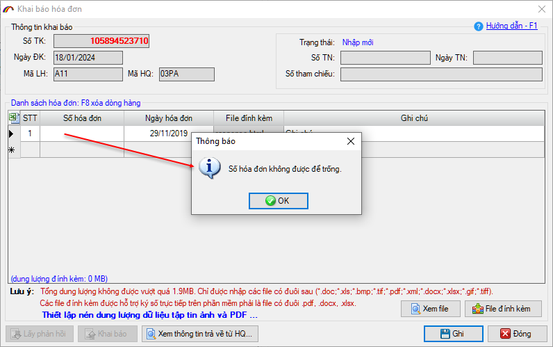
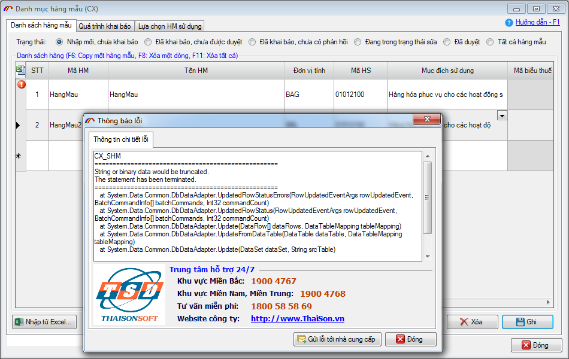
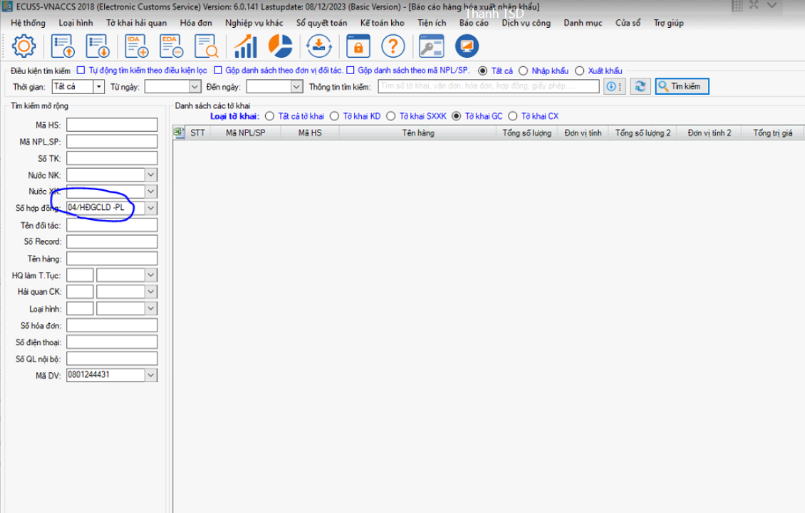
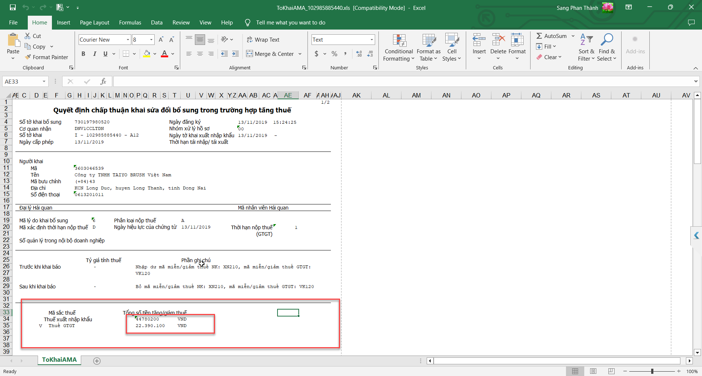
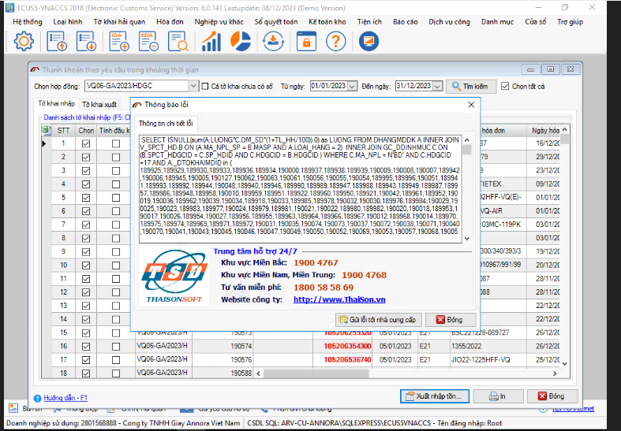

NHỮNG THAY ĐỔI TRÊN BẢN ECUS5VNACCS 2018
(Phiên bản update 18/01/2024)
Phần mềm ECUS5VNACCS2018 - Ngày phát hành 01/02/2024
Phiên bản cập nhật ngày 18/01/2024 được phát hành ngày 01/02/2024 sửa đổi bổ sung một số chức năng, nhằm tăng hiệu suất phần mềm. Các chức năng được sửa đổi, bổ sung cụ thể như hướng dẫn dưới đây:
- 1. Sửa đổi chức năng khai báo chứng từ đính kèm.
Ở bản nâng cấp này, phần mềm sẽ valid thông tin dữ liệu các chứng từ đính kèm lúc Ghi đối với các chỉ tiêu bắt buộc. Nhằm tránh tình trạng ghi được nhưng khai lên bị hệ thống Hải quan từ chối:

- 2. Sửa lỗi danh mục hàng mẫu chế xuất
Sửa lỗi danh mục hàng mẫu chế xuất, khi doanh nghiệp chọn mục đích sử dụng: Hàng hóa phục vụ cho các hoạt động sản xuất khác của doanh nghiệp, sau đó đồng ý sửa cho toàn bộ dòng hàng trong danh sách thì gặp lỗi:

- 3. Sửa đổi chức năng báo cáo
Phần mềm sửa đổi cho 2 chức năng báo cáo:
- 1. Báo cáo tổng hợp hàng hoá xuất nhập khẩu.
- 2. Báo cáo chi tiết hàng hoá xuất nhập khẩu.
Khắc phục tình trạng không tìm kiếm được khi số hợp đồng gia công có chứa ký tự Tiếng Việt (ví dụ: 04/HĐGCLD- PL)

- 4. Sửa đổi chức năng in tờ khai AMA:
Chuẩn hóa lại ngăn cách tiền thuế trong mẫu In tờ khai AMA:

- 5. Sửa đổi chức năng thanh khoản theo yêu cầu.
Khi doanh nghiệp xem thanh khoản theo yêu cầu với hợp đồng có nhiều tờ khai sẽ bị lỗi (như ảnh dưới), bản nâng cấp này đã xử lý lỗi:

- 6. Sửa đổi chức năng khai báo tự động định danh hàng hóa.
Chức năng import danh sách định danh hàng hóa, sau khi import xong phần mềm tự động cập nhật tất cả các lần khai báo trước đó thành Nhập mới.
- 7. Cùng nhiều chức năng tiện ích khác...
Bản quyền © thuộc về Công ty TNHH Phát triển công nghệ Thái Sơn